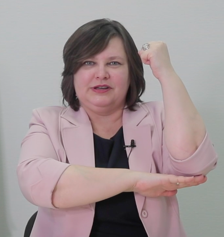
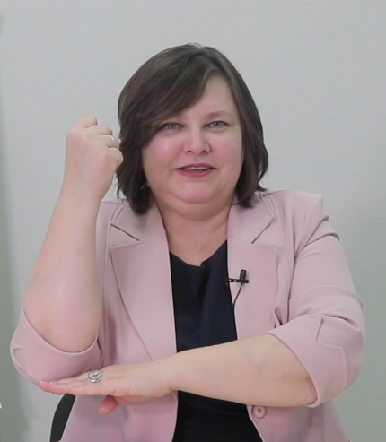
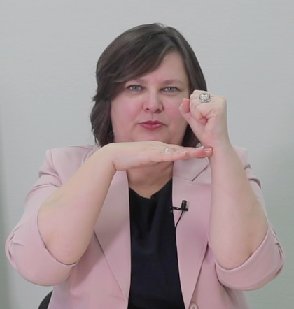
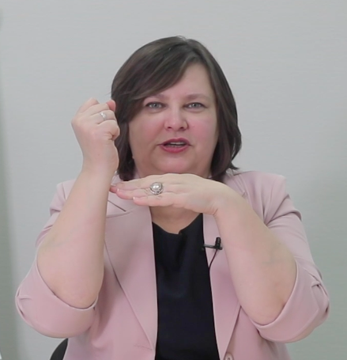
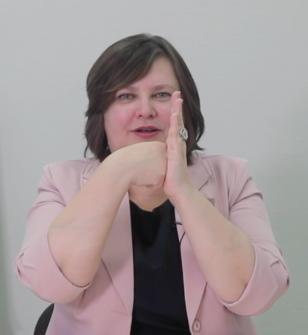

Фитнес для мозга: тренировка на каждый день
Итак, давайте поговорим про профилактику: как же сделать так, чтобы мозг был в тонусе? Я предлагаю целую систему, которая называется фитнес для мозга. Что включает в себя эта система?
Первое, чему нужно обязательно научиться — расслабляться, снимать стресс. Дело в том, что когда мы испытываем стресс, у нас повышается выработка гормона стресса — кортизола, который блокирует нашу память. А вот сжигается кортизол только физически, а точнее, аэробно. И поэтому очень полезна не силовая, а именно аэробная нагрузка: когда вы ходите, плаваете или делаете, например, дыхательные упражнения.
Онлайн-тренировка. Давайте прямо сейчас сделаем одно из упражнений, чтобы вы прочувствовали это на себе. Сядьте удобно, расслабьтесь, закройте глаза. Я сейчас буду считать: на два счета вам нужно сделать вдох, на четыре — выдох. Каждый раз вдох будет равен выдоху, а выдох в два раза больше. Итак, делаем вдох — 1, 2, выдох — 1, 2, 3, 4, вдох — 1, 2, 3, 4, выдох — 1, 2, 3, 4, 5, 6, 7, 8, вдох — 1, 2, 3, 4, 5, 6, 7, 8, выдох — 1, 2, 3, 4, 5, 6, 7, 8, 9, 10, 11, 12, 13, 14, 15, 16. И выдыхаем через нос. Затем вдох — он самый важный. Этот последний вдох активно насыщает мозг кислородом.
Когда вы дышите сейчас, после этого упражнения, что происходит? Кровь наполняется кислородом, который активно поступает в ваш мозг и питает его. Дело в том, что наш мозг составляет всего 2% от веса человека, но потребляет до 24% поступающего в организм кислорода. И если вы чувствуете усталость, напряжение или вам нужно интенсивно поработать, что-то поучить, переработать большое количество информации — сделайте это дыхательное упражнение.
Как себя сейчас чувствуете? В идеале желательно сделать это упражнение 2-3 раза. Даже если вы просто осознанно подышите: вдох-выдох, вы почувствуете бодрость. Если же у вас после этого упражнения пошла зевота — это показатель кислородного голодания. Значит, вам нужно обязательно делать подобные дыхательные упражнения. Дыхание — это питание для вашего мозга, это энергия. Не пренебрегайте этим.
Упражнение на расслабление. Помимо дыхательных упражнений хорошо делать упражнения на расслабление: когда вы, например, напрягаете и расслабляете какие-то группы мышц. Сканируйте себя в течение дня: насколько вы расслаблены или напряжены.
Давайте посмотрим прямо сейчас. Закройте глаза. Я буду называть группы мышц, а вы обращайте внимание, напряжены они у вас или нет. Если напряжены, то попробуйте расслабить их. Готовы? Итак, сканируем себя от макушки до кончиков пальцев ног. Смотрим лоб, скулы, подбородок, затылок, шею, плечи, руки, спину, живот, бедра, икры, стопы. Почувствовали где-то напряжение? Было ли у вас такое: когда я называла группы мышц, вы обращали на них внимание и тут же расслаблялись? Иногда для того, чтобы снять напряжение, достаточно просто обратить внимание на напряженный участок.
Это упражнение особенно важно делать тем, кто долго сидит за столом, работает за компьютером. Часто бывает, что мы сидим в одной позе, хорошо если правильной. Но обычно плечи у нас приподняты, шея втянута; когда мы наклоняемся, у нас пережимается дыхательная система, то есть мы неправильно дышим. А потом не можем разогнуться, жалуемся на остеохондроз, идем на массаж. Чтобы снять эти проблемы, порой достаточно всего лишь периодически сканировать себя на наличие напряжения в разных частях тела.
Скрытая гимнастика. Эта гимнастика для тех, кто обнаружил напряжение, но не смог его снять. Тогда вам нужно еще сильнее напрячь напряженный участок, например, мышцы спины, плеч или рук. Подержать так на десять счетов, постепенно усиливая напряжение, и потом расслабить. Как только вы это сделаете, то сразу почувствуете, как кровь побежала по расслабленным мышцам и вам стало легче.
Еще один секрет. Есть еще один секрет, как быстро восстановиться, снять напряжение и усталость. Дать питание мозгу — это подкормить его глюкозой. Дело в том, что наш мозг потребляет до 50% глюкозы, которую мы получаем. И поэтому, если чувствуете, что переутомились или же вас ожидает какая-то серьезная работа, выпейте чай, например, с кусочком сахара или маленькой плиткой шоколада.
Утренняя зарядка для мозга
Некоторые спрашивают: а что делать, если чувство усталости постоянное, и даже утром нет легкости — ощущение, что всю ночь разгружали вагоны. В этом случае мы говорим о том, что, скорее всего, перед сном вы не расслабились. Отдохнуть мы можем только, если максимально снизим напряжение перед сном, либо сделаем специальную утреннюю зарядку для мозга. Что это за утренняя зарядка для мозга?
Онлайн-тренировка. Я вам предлагаю прямо сейчас ее сделать. Она отлично поможет прокачать память, внимание и даже речь. Итак, сначала двигательные упражнения. Одной рукой мы сжимаем кулак, а второй — раскрываем ладошку. Это мы это называем «гриб-поляна», похоже, да? Грибок на поляне (см. фото «Положение рук 1»). И поменяли руки (см. фото «Положение рук 2»). Давайте сделаем вместе: «гриб-поляна-гриб-поляна-гриб-поляна». Получается? Хорошо.


Далее делаем следующее упражнение, похожее на предыдущее, только у нас теперь будет кулак и ладонь (см. фото «Положение рук 3»). Мы уменьшаем амплитуду движения и меняем положение рук «кулак-ладонь-кулак-ладонь-кулак-ладонь» (см. фото «Положение рук 4»).


И третье упражнение: ладонь-кулак, и поменяли руки (см. фото «Положение рук 5»).

Я думаю, по отдельности у вас легко получилось. А сейчас я предлагаю объединить все три упражнения и сделать серию жестов. По 4 раза каждый жест. «Гриб-поляна» («Положение рук 1 и 2») — 1, 2, 3, 4. «Кулак-ладонь» («Положение рук 3 и 4») — 1, 2, 3, 4. И «ладонь-кулак» («Положение рук 5») — 1, 2, 3, 4. Ускоряемся: 1, 2, 3, 4… Получается?
А теперь добавим еще и скороговорку. Полезное упражнение, благодаря которому вы разбудите еще и свой речевой аппарат, особенно если вам нужно в этот день много говорить. Давайте проговорим скороговорку: «король — орел». Всего два слова, но говорить их нужно определенным образом. Итак, раскрываем грудную клетку, делаем вдох через нос (плечи при этом не поднимаем), дыхание используем брюшное, диафрагмальное. Сделали вдох, живот должен надуться. И на одном выдохе проговариваем как можно больше раз «король-орел». Сколько получится. Когда мы занимались с детьми, у одного ребенка был рекорд — 40 раз на одном выдохе, у взрослых — 68. Может быть, вы поставите свой личный рекорд. Этим упражнением мы прокачиваем не только речевые центры, но дыхательную систему — используем так называемое речевое дыхание.
И последний этап нашей утренней зарядки для мозга: соединяем движения руками и скороговорку. Готовы? Делаем. «Король-орел, король-орел, король-орел…» Помните, вдох всегда должен быть носом. Как ощущения? 12 минут такой гимнастики по утрам, и вы почувствуете, что мозг проснулся, взбодрился и у вас появилось желание сделать очень много — осуществить очередной план по захвату мира.
На самом деле, вы сами можете придумывать свои серии двигательных упражнений и взять скороговорки, которые именно вам трудно даются. Главное правило: когда вы тренируетесь, делайте не то, что у вас легко получается, а то, что требует усилий. Ставьте себя в ситуацию преодоления — именно в этот момент у нас идет активное развитие новой нейронной сети, то есть мы развиваем свой мозг.